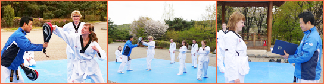
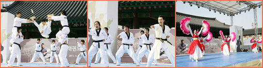

Taekwondo
Taekwondo Tours
Taekwondo is Korea’s most representative martial arts and is a globally-recognized sport. Not just an important defensive art that has played a key part in Korean history, Taekwondo also improves the physical abilities and mental strength of its practitioners.
Want to learn more about this exciting skill? Highly-trained masters (many with experience in both Taekwondo and Hapkido) welcome international visitors of all ages and experience levels to join in the fun for an unforgettable Taekwondo Experience!
If your time is limited and you’re a Taekwondo beginner, you may want to try the ‘Namsangol Hanok Village Taekwondo Experience Program’ (1 hr) or the ‘1-Day Taekwondo Culture Tour’ (choose between a 90-min or a 3-hr Taekwondo class). For a deeper look into the world of Taekwondo, check out the ‘Taekwondo Training Programs,’ which can be taken anywhere from 2 to 15 days and can accommodate Taekwondo students of all levels.
For anyone unable (or not quite ready) to jump in and learn Taekwondo, there is also a Taekwondo performance titled ‘Legend of Taekwondo,’ an amusing story that sets the backdrop for a stunning display of skill by Taekwondo masters.
Namsangol Hanok Village Taekwondo Experience Program

This program is an hour-long class in which students learn the basic forms of Taekwondo, self-defense techniques, and wood-breaking. Classes are run three times a day every Wednesday, Saturday, and Sunday at the Namsangol Hanok Village. Those who would like to participate in the Taekwondo program are asked to make a reservation in advance by calling the number below or registering online. Classes may be cancelled if there are less than 5 participants for any given time slot. Customized programs with flexible dates and times can be arranged for groups of 20 or more.
Regular Taekwondo performance: ‘Legend of Taekwondo’

‘Legend of Taekwondo’ is a Taekwondo performance combining traditional Korean dance and Taekwondo moves. The non-verbal performance depicts the fight for a beautiful and hopeful world in the face of an evil god who wants only strife.
The performance is comprised of three acts: act 1 ‘Land of the Morning Calm', act 2 'Soul of Taekwondo', and act 3 'Legend of Taekwondo'. The free show is performed in the Cheonugak Stage area of Namsangol Hanok Village from 4pm to 5pm on Wednesdays, Saturdays, and Sundays.